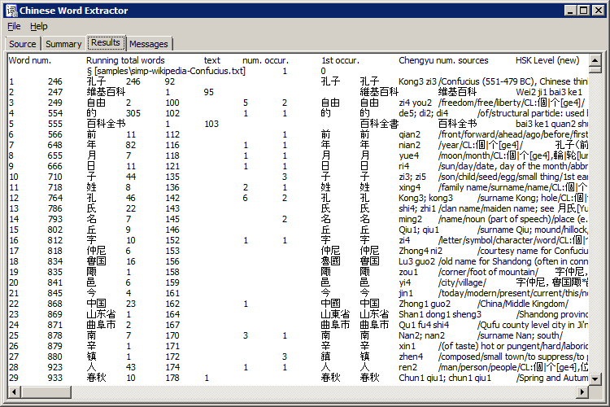
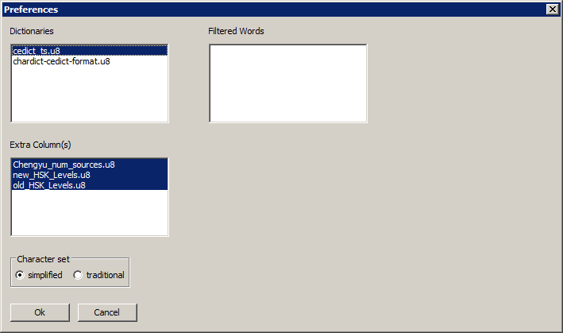
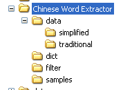

Chinese Word Extractor
Introduction
Chinese Word Extractor is a program to split any Chinese text into individual words, summarizing information about each unique word. The information is presented in the form of a tab-delimited matrix, so that the results can be easily copied and pasted into a spreadsheet program like Excel. The method for segmenting the words is simply to find the longest match within the dictionaries loaded into the program. This works well in general, but fails for some character combinations by splitting in the wrong place. it also fails to make words out of terms that aren't in the dictionary, and instead treats these as a series of single characters.

Running the program
When starting the program, the active window will be the Source tab. Chinese text (which can include foreign text) can be entered into tis window in two different ways. In the first method, the Source tab functions like a normal editor, and data can be pasted into it and edited as necessary. The second method is to read data from one or more files. Select the File->Open menu item to open the file window. Navigate to the proper directory and select the desired file. Using Control + click, you can select multiple files to open at the same time. After clicking the Open button, the file(s) will be loaded into the editor window, and multiple files will be loaded in the order they were selected. Each file will include a heading with a special character and the file name. This can be useful in the summary window, as it marks the places where new files are encountered throughout the running vocabulary list.
With data in the Source tab, now select the File->Analyze menu item. A progress bar will show how the analysis is proceeding, but may be too fast to see for small amounts of text. When the analysis completes, the Results tab will be filled with data on each unique word found. Some of the columns are:
- Word Number: An incremental count of Chinese words, not including non-Chinese words or words not in the dictionary
- Running Total Words: The sum of the total occurrences for this word and all previous words encountered
- Text: The original word
- Number of Occurrences: Number of times the word occurs in the text
- First Occurrence: The character position of the first occurrence
- Traditional: Traditional variant of the word as defined in the dictionaries used. All variants will be listed if there are multiple mappings
- Simplified: Simplified variant of the word as defined in the dictionaries used. All variants will be listed if there are multiple mappings
- Pinyin: Pinyin pronunciation as defined in the dictionaries. All values will be listed if there are multiple entries
- English: English definition as found in the dictionaries
- Sample Sentence: The first sentence the word was found in, with the word isolated by asterisks
To export the Result data, simply highlight all the data using Control-A, and copy it to the clipboard. The contents can be pasted directly into Excel or another spreadsheet program for further analysis.
Setting preferences

By selecting File->Preferences, you can manage the current settings of the program.
One or more dictionaries can be set active by highlighting them; use Control+click or Shift+click to highlight multiple dictionaries. The "Filtered Words" (see below) list allows you to select files containing lists of words to be filtered out of the results. The Extra Column(s)" (see below) list allows you to add extra column data to the results tab. Extra Column files are specific to simplified/traditional character sets, while dictionary and filtered word files work with either traditional or simplified texts.
The Character Set option sets the program to analyze the text as using simplified or traditional characters, using the appropriate simplified/traditional entry in the dictionary(ies) to identify words. Note that because extra column files are specific to a character set, the Extra Column(s) will change, and must be reselected (even if the names are identical).
Updating dictionaries
Dictionaries are stored in the program subdirectory "dict". The CC-CEDICT dictionary is included with the program, and any dictionary in the CEDICT format (traditional simplified [pinyin] /English/definitions/) can be used as an additional source of definitions. All dictionary files must be in Unicode UTF-8 format.
The CC-CEDICT dictionary can be updated to the latest version by downloading the latest file "cedict_1_0_ts_utf-8_mdbg.zip" from http://www.mdbg.net/chindict/chindict.php?page=cedict, extracting the file, and replacing the existing cedict_ts.u8 file.
Dictionaries or other files in the dict directory which are named with a leading underscore "_" will not be listed in the Preferences tab. This can be useful for documentation files or dictionaries temporarily on hold.
Adding filtered word lists
When using this program for creating vocabulary lists, it is often useful to automatically exclude well-known words from the results. Filtered word files are simply lists of words, one per line, saved in the filter/ subdirectory in Unicode UTF-8 format. Words can be either simplified or traditional, or even a mix of both in the same file.
Files in the filter directory which are named with a leading underscore "_" will not be listed in the Preferences tab. This can be useful for documentation files or filters temporarily on hold.
Adding extra column data
Data used in the columns of the results are obtained from files in the program subdirectory "data", in specific subdirectories for simplified and traditional characters. Data in these files will contain two columns separated by a tab: the first column will be a word and the second will be a value associated with the word. In the results, an extra column will be added for any data files set to active in Preferences. For words defined in the file, the corresponding value will be inserted in the extra column. For words not listed, the data will be blank.
If there is a line in the file starting with the text "# Heading: ", the remaining text on the line will be used as the column heading in the results. If the line is not found in the file, the filename will be used as the column name.

Note on Unicode UTF-8 encoding
Some programs, when saving files in UTF-8 format, will insert as the first character in the file an extra character known as a byte-order mark (BOM). It's difficult to tell whether this character exists in the file without hex editors or other special software. This program will read dictionaries, filters, or extra column files as if the BOM were real data. This means that data on the first line of the file will not work as expected. If you are uncertain whether this is happening and want to protect against it, you can simply have a comment (a line starting with '#') as the first line of the file.